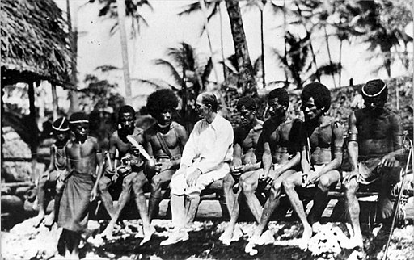

Ahora que has aprendido los conceptos básicos de la antropología, es momento de explorar sus métodos de estudio, por ello te proponemos comenzar a pensar como antropólogo y tomar en cuenta todos tus conocimientos sobre
En esta ocasión, regresaremos al 2020, año marcado por la pandemia por COVID-19 para así estudiar este fenómeno mundial desde una perspectiva antropológica usando tanto el método como el
Método Comparativo
En esta ocasión, y después de revivir algunos momentos, decides que quieres estudiar más a fondo lo que ocurrió durante el año 2020. Enseguida te presentamos un ejemplo para que definas una investigación antropológica con el método comparativo. Vamos a ir paso a paso, ¿de acuerdo? Da clic a continuación para descubrir cuáles son esos pasos y lo que hay que hacer en cada caso.
Primero que nada, hay que definir qué aspectos quieres aprender del mundo en este particular año desde una perspectiva antropológica, utilizando el método comparativo, es decir debes plantear el problema de investigación.
¿Se te ocurre algún tema que quieras estudiar?, ¿qué aspectos de la vida de ese año en particular te gustaría comprender? Recuerda que debes tomar en cuenta el objeto de estudio de la antropología para enfocar tu investigación, para que puedas comprenderlo mejor, te presentamos un ejemplo
Supongamos que la investigación en este caso va a abordar el tema de cómo cambiaron las relaciones personales y formas de convivencia en la población de jóvenes entre 15 y 18 años en México y Estados Unidos.
¿Lo notaste? En el método comparativo es fundamental elegir dos o más grupos de comunidades o culturas diferentes, pues así es como pueden estudiarse sus similitudes y diferencias.
Una vez que se ha planteado el problema de investigación, hay que seleccionar una muestra representativa de jóvenes de ambos países, teniendo en cuenta factores como la edad, el género, el nivel educativo, la clase social y la ubicación geográfica. Buscas fuentes de información confiables y actualizadas, como encuestas, entrevistas, artículos académicos y reportes oficiales.
La información que has recabado te permite identificar las variables que son de utilidad, como el grado de confianza en el gobierno, el nivel de empatía hacia los demás, el sentido de identidad colectiva, la percepción del riesgo y la responsabilidad personal, y la adaptación a los cambios sociales y tecnológicos, esto te permite establecer hipótesis sobre las posibles relaciones entre estas variables y las diferencias o similitudes entre los grupos.
Ya que has identificado las variables de interés y has establecido las hipótesis, ¿qué harías después?
Las hipótesis te permiten comparar sistemáticamente los datos obtenidos, buscando patrones de correspondencia o contraste que apoyen o refuten las hipótesis, para hacerlo utilizas técnicas estadísticas y cualitativas para medir la significancia y la consistencia de tus hallazgos.
Analizas también el contexto cultural que influyó en la formación de las actitudes y creencias de los jóvenes, considerando factores como la trayectoria política, económica y social de cada país, las influencias externas e internas, las tradiciones y valores culturales, así como las experiencias personales y familiares.
¡Muy bien! Ya cuentas con los resultados de tu investigación, ¿cuál es el siguiente paso?
Por último, interpretas los resultados obtenidos, explicando las causas y consecuencias de las similitudes y diferencias encontradas, así como las limitaciones y alcances de tu estudio, es decir que elaboras una conclusión. Propones recomendaciones para mejorar la comunicación, la cooperación y la convivencia entre los jóvenes de ambos países, así como para prevenir o afrontar futuras crisis globales, dicho de otra manera elaboras una discusión.
Una vez que cuentas con tu trabajo de investigación terminado, es importante que no se quede guardado en tu computadora o en un librero. Lo mejor es difundirlo para que otras personas comprendan y entiendan un poco más acerca de cómo los jóvenes vivieron la pandemia por COVID-19. ¿De qué maneras puedes difundir este conocimiento?, una de ellas es por medio de revistas de divulgación científica, esto haría que tu trabajo fuera de utilidad para otros académicos y estudiantes. También puedes difundirlo a la comunidad por medio de videos, carteles, infografías, esto puede ayudar a que la población en general pueda comprender mejor este fenómeno.
Método Etnográfico

Bronisław Malinowski (considerado el padre de la etnografía) con un grupo de nativos de las islas Trobriand. Foto de Wikimedia Commons
Ahora que nos encontramos en el año 2021, llama tu atención una comunidad al sur de Veracruz, Catemaco; una región conocida por su tradición de brujería y su riqueza natural. Y decides realizar una investigación antropológica utilizando el método etnográfico.
Como ya sabes, lo primero es plantear el problema de investigación, el cual es cómo la pandemia ha afectado la vida social, cultural y económica de la comunidad de Catemaco.
Tomando en cuenta que el método etnográfico implica una investigación de campo intensiva y participativa en una comunidad o grupo cultural específico durante un período prolongado de tiempo. ¿Cuál crees que sea el siguiente paso?
¡Prepárate para sumergirte en la vida diaria de esta comunidad y entender su experiencia durante la pandemia!
Al llegar a Catemaco, te sumerges en la comunidad, estableciendo relaciones con los habitantes locales, pasas tiempo con ellos, observando y participando en sus actividades cotidianas para obtener una comprensión profunda de su vida diaria y cómo ha cambiado debido al COVID-19.
¿Qué crees que se necesite para que la comunidad te ayude en tu estudio? Es importante generar un ambiente de confianza, empatía y respeto, es decir que debes tener una actitud de alteridad, en la que aceptes las costumbres y tradiciones del lugar.
Una vez que te has ganado la confianza de la población, utilizas la para aprender sobre las prácticas culturales y las interacciones sociales en la comunidad durante la pandemia. También realizas con miembros de la comunidad, incluyendo jóvenes, adultos y ancianos, para obtener una perspectiva completa de cómo la pandemia ha afectado a diferentes grupos.
¿Qué preguntarías a la comunidad para poder comprender más sobre tu tema de investigación?, ¿en qué te fijarías? Es muy importante tener en cuenta siempre el tema y objetivo de investigación, de esta manera sabemos en qué debemos centrar nuestra atención.
Con todo lo que observas y hablas con la comunidad, seguro necesitarás tomar notas, ¿no crees?
Mientras te sumerges en la vida de la comunidad, tomas notas detalladas de tus observaciones, conversaciones y reflexiones personales, es decir que realizas un registro de tus datos por medio de un en él registras datos relevantes sobre cambios en la economía local, prácticas culturales, interacciones sociales y percepciones sobre el virus y las medidas preventivas.
Tomar notas, ya sea escritas o grabadas te permitirá recordar todo lo que has aprendido de la comunidad, ahora ¿qué deberías hacer con estos datos?
Este proceso te lleva varios meses de tu vida, puesto que quieres recolectar toda la información posible desde los distintos miembros de la comunidad. Una vez que has recopilado suficientes datos etnográficos, comienzas a analizarlos en busca de patrones y tendencias. Buscas conexiones entre las respuestas de la comunidad y los factores culturales, políticos y socioeconómicos que puedan haber influido en su experiencia de la pandemia.
A medida que avanzas en tu análisis, empiezas a desarrollar interpretaciones sobre cómo el COVID-19 ha afectado la comunidad de Catemaco en diferentes aspectos de su vida. Examinas cómo han cambiado sus prácticas culturales, cómo se han adaptado socialmente y cómo ha impactado en su economía local.
Finalmente, compartes tus hallazgos y conclusiones con la comunidad de Catemaco y otros interesados. Les muestras cómo sus respuestas y adaptaciones ante la pandemia se reflejan en sus prácticas culturales y en su forma de vivir y relacionarse.
El método etnográfico es especialmente útil para tener una comprensión profunda y de una cultura específica y para captar la complejidad de las interacciones sociales y culturales en su contexto natural.
Al utilizar ambos métodos, los antropólogos pueden generar conocimientos significativos sobre la diversidad cultural y los patrones comunes que caracterizan a la humanidad en su conjunto.
Métodos antropológicos
Seguramente ya comprendes mucho mejor cómo se llevan a cabo estos métodos antropológicos. Para que compruebes todo lo que has aprendido, te invitamos a participar en el siguiente reto.
¿Qué tal te fue? No tenemos duda de que has aprendido mucho hasta el momento, así que es tiempo de proseguir el camino, ahora toca el turno al análisis diacrónico y sincrónico ¿cómo se realiza? Seguramente tienes mucha curiosidad al igual que yo.